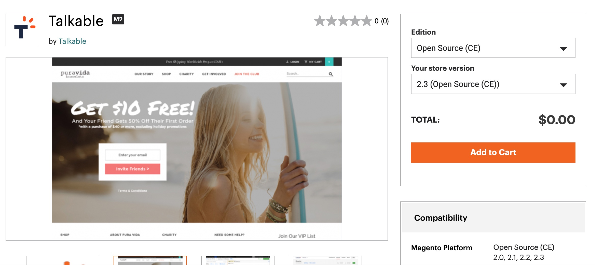

Magento 2.x Integration¶
Note
To get started, you must have an account created with Talkable, and a Magento Marketplace account. If you do not have a Magento Marketplace account configured, follow these steps to connect one to your Magento store.
The Magento 2 Integration Extension is available to download in the Magento Marketplace. The extension supports all versions of Magento 2.0 or higher.
Installation¶
Note
Installation via Composer requires an IT administrator with SSH access to the server where Magento 2 is hosted. To install the Talkable extension, you’ll need to execute four commands.
Visit the Magento Marketplace and get the Talkable extension.

Log in to your Magento 2 server and navigate to the root directory of your Magento app from your command line tool. This guide shows example outputs for Terminal, but these steps can be modified for any command line tool of your choice.
Run the following command to access the latest version of the Talkable extension.
composer require talkable/magento2-integration
Run the following command to enable the Talkable extension you just downloaded:
php bin/magento module:enable Talkable_Integration --clear-static-content
You should see the following output:
The following modules have been enabled: - Talkable_Integration To make sure that the enabled modules are properly registered, run 'setup:upgrade'. Cache cleared successfully. Generated classes cleared successfully. Please run the 'setup:di:compile' command to generate classes. Generated static view files cleared successfully.
As displayed in the sample output, you must now enable any additional modules. Run the following command to enable them:
php bin/magento setup:upgrade
To ensure that the CSS and JS on your Magento 2 store continues to work properly, you’ll need to run a static content deploy command.
php bin/magento setup:static-content:deploy -f
Installation via Composer is complete! You can now return to the Magento admin dashboard from your browser.
Accessing Talkable Configuration¶
To access Talkable extension settings, navigate to Stores → Configuration in your Magento admin panel.

Then select Talkable → Talkable Configuration from the list of available configurations. If you have multiple stores, select the desired Store View you want to change the settings for.

Configuring Talkable Extension¶
The extension configuration screen consists of three sections: Integration, Campaigns and Page URLs.

Integration¶
The Integration section allows you to change the Talkable Site ID, which is used to connect your store to your Talkable account.

Warning
Only change this setting if you need to connect your store to a different site in the Talkable dashboard. An incorrect value will prevent your campaigns from showing.
Changing the Site ID will invalidate the full page cache. Magento will display a warning message with a link to the Cache Management page. Please follow this link and refresh the invalidated cache types.

Note
You need to paste the Site ID from your Talkable Site Dashboard into this field.

Campaigns¶
The Campaigns section allows you to enable or disable different types of campaigns on your site. For example, if you don’t have Standalone or Advocate Dashboard campaigns configured in Talkable, you can disable these campaigns in extension config, so the corresponding pages are not accessible.

Page URLs¶
The Page URLs section allows you to change paths to the Standalone Share and Advocate Dashboard pages. The paths must match the placements you have configured in Talkable for this campaign type. Default values correspond to default placements in Talkable.

Warning
Only change these settings if you have configured custom placements for these campaign types in your Talkable dashboard. Incorrect values will prevent your Standalone or Dashboard campaign from showing.